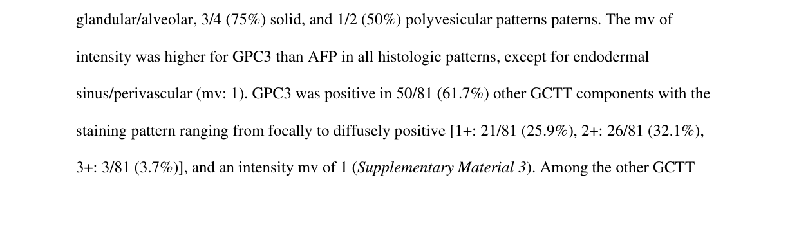

Yolk sac tumor (YST), historically called endodermal sinus tumor, is a malignant germ cell tumor that recapitulates extraembryonic (yolk sac / primitive endoderm) differentiation. It is the most common malignant germ cell tumor of childhood and arises at both gonadal (testis, ovary) and extragonadal midline (mediastinum, retroperitoneum, sacrococcyx, pineal/CNS, vagina) sites, reflecting the migration path of primordial germ cells. YST cells produce alpha-fetoprotein (AFP), which serves as a sensitive serum tumor marker for diagnosis and treatment monitoring. The histologic hallmark is the Schiller-Duval body. Pure pediatric tumors are typically managed by surgery with platinum-based chemotherapy (BEP/JEB regimens) and have an excellent prognosis, whereas YST occurring as a component of adult mixed germ cell tumors and chemoresistant somatically-derived YST are more aggressive.
Ask a research question about Yolk Sac Tumor. OpenScientist will conduct autonomous deep research using the Disorder Mechanisms Knowledge Base and PubMed literature (typically 10-30 minutes).
Do not include personal health information in your question. Questions and results are cached in your browser's local storage.
name: Yolk Sac Tumor
creation_date: "2026-06-15T00:00:00Z"
category: Complex
description: >-
Yolk sac tumor (YST), historically called endodermal sinus tumor, is a
malignant germ cell tumor that recapitulates extraembryonic (yolk sac /
primitive endoderm) differentiation. It is the most common malignant germ
cell tumor of childhood and arises at both gonadal (testis, ovary) and
extragonadal midline (mediastinum, retroperitoneum, sacrococcyx, pineal/CNS,
vagina) sites, reflecting the migration path of primordial germ cells. YST
cells produce alpha-fetoprotein (AFP), which serves as a sensitive serum
tumor marker for diagnosis and treatment monitoring. The histologic hallmark
is the Schiller-Duval body. Pure pediatric tumors are typically managed by
surgery with platinum-based chemotherapy (BEP/JEB regimens) and have an
excellent prognosis, whereas YST occurring as a component of adult mixed germ
cell tumors and chemoresistant somatically-derived YST are more aggressive.
disease_term:
preferred_term: yolk sac tumor
term:
id: MONDO:0005744
label: yolk sac tumor
synonyms:
- endodermal sinus tumor
- yolk sac carcinoma
- infantile embryonal carcinoma
parents:
- germ cell tumor
- nonseminomatous germ cell tumor
has_subtypes:
- name: Testicular YST
display_name: Testicular yolk sac tumor
description: >-
In prepubertal boys, testicular YST usually occurs in pure form (average
age ~20 months) and behaves indolently. In post-pubertal/adult males it is
most often a component of a mixed germ cell tumor and carries the
isochromosome 12p hallmark of testicular germ cell tumors.
- name: Ovarian YST
display_name: Ovarian yolk sac tumor
description: >-
Ovarian YST peaks at about 19 years of age, often presents as a large
rapidly growing adnexal mass with markedly elevated AFP, and is frequently
managed with fertility-sparing surgery plus platinum-based chemotherapy.
- name: Mediastinal YST
display_name: Mediastinal yolk sac tumor
description: >-
Primary mediastinal YST is an extragonadal germ cell tumor mostly
restricted to young adult males, associated with a worse prognosis than
gonadal tumors and a recognized link to hematologic malignancy and
Klinefelter syndrome.
- name: CNS YST
display_name: Yolk sac tumor of the central nervous system
description: >-
Intracranial YST arises at midline sites (pineal, suprasellar) and is an
AFP-secreting nongerminomatous germ cell tumor managed with chemotherapy
and radiotherapy.
- name: Vaginal YST
display_name: Vaginal (extragonadal) yolk sac tumor
description: >-
Vaginal YST is an extragonadal germ cell malignancy almost restricted to
children under 2 years of age, presenting with vaginal bleeding and an
elevated AFP.
pathophysiology:
- name: Primordial Germ Cell Origin and Extraembryonic Differentiation
description: >-
YST arises from transformed primordial germ cells (or, at extragonadal
sites, from germ cells mislocated along the embryonic midline migration
route) that adopt an extraembryonic, yolk-sac / primitive-endoderm
differentiation program rather than embryonic somatic lineages. This
aberrant differentiation underlies the tumor's characteristic morphology
and AFP production.
cell_types:
- preferred_term: primordial germ cell
term:
id: CL:0000670
label: primordial germ cell
biological_processes:
- preferred_term: aberrant extraembryonic (yolk sac) differentiation
modifier: ABNORMAL
term:
id: GO:0030154
label: cell differentiation
evidence:
- reference: PMID:25395492
reference_title: "The yolk sac tumor: reflections on a remarkable neoplasm and two of the many intrigued by it-Gunnar Teilum and Aleksander Talerman-and the bond it formed between them."
supports: SUPPORT
evidence_source: OTHER
snippet: >-
Teilum named the tumor "endodermal sinus tumor" because it came to his
attention that papillary formations common in the yolk sac tumor
resembled the endodermal sinuses of the rat placenta.
explanation: >-
The tumor is named for and defined by its recapitulation of
extraembryonic (yolk sac / endodermal sinus) structures, reflecting an
aberrant extraembryonic differentiation program of germ cell origin.
downstream:
- target: AFP Secretion
description: >-
Yolk-sac differentiated tumor cells synthesize and secrete
alpha-fetoprotein, mirroring the normal fetal yolk sac / liver.
- target: Uncontrolled Germ Cell Tumor Proliferation
description: >-
Transformed germ cells proliferate to form a rapidly enlarging mass.
- name: AFP Secretion
description: >-
YST cells produce alpha-fetoprotein (AFP), the fetal serum protein normally
made by the yolk sac and fetal liver. Markedly elevated serum AFP is a
sensitive marker for diagnosis, detection of residual/recurrent disease,
and monitoring response to therapy.
gene_products:
- preferred_term: alpha-fetoprotein
term:
id: NCIT:C16278
label: Alpha-Fetoprotein
evidence:
- reference: PMID:40818404
reference_title: "Pediatric vaginal yolk sac tumor: A rare case report and diagnostic challenges."
supports: SUPPORT
evidence_source: HUMAN_CLINICAL
snippet: >-
Histopathologic analysis confirmed YST, supported by characteristic
Schiller-Duval bodies and markedly elevated alpha-fetoprotein (AFP)
levels.
explanation: >-
In this vaginal YST case, the diagnosis was supported by markedly
elevated AFP, illustrating AFP secretion by YST cells.
- name: Uncontrolled Germ Cell Tumor Proliferation
description: >-
Transformed germ cells proliferate in an unregulated manner, producing a
rapidly growing mass that often presents with local symptoms and, when
advanced, lymphatic and hematogenous metastasis.
biological_processes:
- preferred_term: tumor cell proliferation
modifier: INCREASED
term:
id: GO:0008283
label: cell population proliferation
evidence:
- reference: PMID:40037273
reference_title: "Acute abdominopelvic pain and distension in a 21-year-old woman revealing a mixed germ cell tumor: A case report."
supports: PARTIAL
evidence_source: HUMAN_CLINICAL
snippet: >-
Mixed OGCTs are rare but highly aggressive tumors that primarily affect
young women.
explanation: >-
Yolk sac tumor is a frequent component of these aggressive mixed ovarian
germ cell tumors of young women; the snippet supports their aggressive,
rapidly growing clinical behavior but does not directly characterize the
proliferative mechanism.
- name: Isochromosome 12p and Germ Cell Tumor Genetics
description: >-
Post-pubertal/testicular germ cell tumors, including YST components of
mixed tumors, characteristically carry isochromosome 12p [i(12p)], a
gain of the short arm of chromosome 12 that is a hallmark cytogenetic
aberration of (post-pubertal) testicular germ cell tumors. Pure
prepubertal and many ovarian/pediatric YSTs more often show diverse,
site-specific chromosomal changes.
evidence:
- reference: PMID:42192914
reference_title: "Comparative Molecular and Genetic Landscape of Gonadal Germ Cell Tumors: Insights from Testicular and Ovarian Neoplasms."
supports: PARTIAL
evidence_source: OTHER
snippet: >-
Isochromosome 12p is a hallmark of testicular GCTs, while ovarian GCTs
show diverse chromosomal changes.
explanation: >-
Isochromosome 12p is the characteristic cytogenetic lesion of testicular
germ cell tumors as a class, distinguishing them from ovarian GCTs; the
review does not specifically isolate the YST component, so support is
partial.
phenotypes:
- name: Elevated serum alpha-fetoprotein
description: >-
Markedly elevated circulating AFP is the characteristic biochemical
finding in YST and is used for diagnosis and monitoring.
phenotype_term:
preferred_term: Elevated circulating alpha-fetoprotein concentration
term:
id: HP:0006254
label: Elevated circulating alpha-fetoprotein concentration
evidence:
- reference: PMID:40818404
reference_title: "Pediatric vaginal yolk sac tumor: A rare case report and diagnostic challenges."
supports: SUPPORT
evidence_source: HUMAN_CLINICAL
snippet: >-
Histopathologic analysis confirmed YST, supported by characteristic
Schiller-Duval bodies and markedly elevated alpha-fetoprotein (AFP)
levels.
explanation: >-
Markedly elevated AFP accompanied the histologic diagnosis of YST.
- name: Abdominal pain
subtype: Ovarian YST
description: >-
Acute abdominopelvic pain and distension is the most common presenting
symptom of ovarian/pelvic yolk sac tumor, reflecting a rapidly enlarging
pelvic mass.
phenotype_term:
preferred_term: Abdominal pain
term:
id: HP:0002027
label: Abdominal pain
temporality: ACUTE
evidence:
- reference: PMID:40037273
reference_title: "Acute abdominopelvic pain and distension in a 21-year-old woman revealing a mixed germ cell tumor: A case report."
supports: SUPPORT
evidence_source: HUMAN_CLINICAL
snippet: >-
Acute abdominopelvic pain and distension in a 21-year-old woman revealing
a mixed germ cell tumor
explanation: >-
An ovarian germ cell tumor with a yolk sac tumor component presented
acutely with abdominopelvic pain and distension as the revealing symptom.
- name: Testicular mass
subtype: Testicular YST
description: >-
Painless scrotal/testicular mass is the typical presentation of testicular
YST, most often in young boys.
phenotype_term:
preferred_term: Testicular neoplasm
term:
id: HP:0010788
label: Testicular neoplasm
evidence:
- reference: PMID:25395492
reference_title: "The yolk sac tumor: reflections on a remarkable neoplasm and two of the many intrigued by it-Gunnar Teilum and Aleksander Talerman-and the bond it formed between them."
supports: SUPPORT
evidence_source: OTHER
snippet: >-
those of the testis that are pure also occur mostly in young boys
(average age about 20 months)
explanation: >-
Pure testicular YST presents as a testicular tumor, predominantly in
young boys.
- name: Ovarian mass
subtype: Ovarian YST
description: >-
Ovarian YST typically presents as a large, rapidly enlarging adnexal mass,
often with acute abdominopelvic symptoms, in adolescents and young women.
phenotype_term:
preferred_term: Ovarian neoplasm
term:
id: HP:0100615
label: Ovarian neoplasm
evidence:
- reference: PMID:40037273
reference_title: "Acute abdominopelvic pain and distension in a 21-year-old woman revealing a mixed germ cell tumor: A case report."
supports: SUPPORT
evidence_source: HUMAN_CLINICAL
snippet: >-
We present the case of a 21-year-old female who was admitted urgently due
to a large abdominopelvic mass.
explanation: >-
Ovarian germ cell tumors containing YST present as large
abdominopelvic/adnexal masses in young women.
- name: Abdominal mass
description: >-
Large abdominopelvic or retroperitoneal masses are common presentations of
ovarian and extragonadal YST.
phenotype_term:
preferred_term: Abdominal mass
term:
id: HP:0031500
label: Abdominal mass
evidence:
- reference: PMID:40037273
reference_title: "Acute abdominopelvic pain and distension in a 21-year-old woman revealing a mixed germ cell tumor: A case report."
supports: SUPPORT
evidence_source: HUMAN_CLINICAL
snippet: >-
We present the case of a 21-year-old female who was admitted urgently due
to a large abdominopelvic mass.
explanation: >-
YST frequently presents as a large abdominopelvic mass.
- name: Abnormal vaginal bleeding
subtype: Vaginal YST
description: >-
Vaginal YST in infants and young girls characteristically presents with
vaginal bleeding.
phenotype_term:
preferred_term: Abnormal vaginal bleeding
term:
id: HP:0034263
label: Abnormal vaginal bleeding
evidence:
- reference: PMID:40818404
reference_title: "Pediatric vaginal yolk sac tumor: A rare case report and diagnostic challenges."
supports: SUPPORT
evidence_source: HUMAN_CLINICAL
snippet: >-
We present a case of vaginal YST involving a one-year-old girl who
presented with prolonged vaginal bleeding and urinary retention.
explanation: >-
Vaginal bleeding is the characteristic presenting feature of vaginal YST
in young children.
- name: Mediastinal mass
subtype: Mediastinal YST
description: >-
Primary mediastinal YST presents as an anterior mediastinal mass, mostly in
young adult males.
phenotype_term:
preferred_term: Mediastinal mass
term:
id: HP:0033823
label: Mediastinal mass
evidence:
- reference: PMID:25395492
reference_title: "The yolk sac tumor: reflections on a remarkable neoplasm and two of the many intrigued by it-Gunnar Teilum and Aleksander Talerman-and the bond it formed between them."
supports: SUPPORT
evidence_source: OTHER
snippet: "mediastinal forms are mostly restricted to young adult males"
explanation: >-
Mediastinal YST presents as a mediastinal mass predominantly in young
adult males.
histopathology:
- name: Schiller-Duval Bodies
description: >-
Schiller-Duval bodies — perivascular structures with a central vessel
surrounded by tumor cells within a cystic space, resembling the endodermal
sinuses of the rodent placenta — are the histologic hallmark of YST.
finding_term:
preferred_term: Schiller-Duval body
term:
id: NCIT:C54124
label: Schiller-Duval Body
diagnostic: true
evidence:
- reference: PMID:40818404
reference_title: "Pediatric vaginal yolk sac tumor: A rare case report and diagnostic challenges."
supports: SUPPORT
evidence_source: HUMAN_CLINICAL
snippet: >-
Histopathologic analysis confirmed YST, supported by characteristic
Schiller-Duval bodies and markedly elevated alpha-fetoprotein (AFP)
levels.
explanation: >-
Schiller-Duval bodies are the characteristic, diagnostic histologic
feature of YST.
- name: Reticular-Microcystic Pattern
description: >-
The most typical histologic architecture of YST is the
reticular-microcystic pattern described by Teilum, with additional solid,
glandular, and hepatoid patterns recognized.
finding_term:
preferred_term: reticular-microcystic growth pattern
term:
id: NCIT:C157706
label: Microcystic Growth Pattern
evidence:
- reference: PMID:25395492
reference_title: "The yolk sac tumor: reflections on a remarkable neoplasm and two of the many intrigued by it-Gunnar Teilum and Aleksander Talerman-and the bond it formed between them."
supports: SUPPORT
evidence_source: OTHER
snippet: >-
The typical histologic features of the yolk sac tumor are the
reticular-microcystic patterns Teilum described, but various other
patterns, including solid and even rarer ones such as glandular and
hepatoid, are now well known.
explanation: >-
The reticular-microcystic pattern is the typical YST architecture, with
solid, glandular, and hepatoid variants.
biochemical:
- name: Serum Alpha-Fetoprotein
notes: >-
AFP is the principal serum tumor marker of YST. It is used for diagnosis,
assessment of residual or recurrent disease, and monitoring of response to
chemotherapy.
biomarker_term:
preferred_term: Alpha-Fetoprotein
term:
id: NCIT:C16278
label: Alpha-Fetoprotein
evidence:
- reference: PMID:41525035
reference_title: Establishment and characterization of a testicular yolk sac tumor PDX model.
supports: SUPPORT
evidence_source: MODEL_ORGANISM
snippet: >-
Immunohistochemical analysis demonstrated consistent expression of AFP
and SALL4 in PDX tumors, mirroring the diagnostic profile of the original
specimen.
explanation: >-
AFP (with SALL4) is a consistent diagnostic marker of YST, retained in
the in-vivo patient-derived xenograft tumors.
- name: SALL4 Expression
notes: >-
SALL4 is a pluripotency-associated transcription factor expressed in germ
cell tumors including YST, used as a sensitive immunohistochemical marker.
biomarker_term:
preferred_term: Sal-Like Protein 4
term:
id: NCIT:C112908
label: Sal-Like Protein 4
evidence:
- reference: PMID:41525035
reference_title: Establishment and characterization of a testicular yolk sac tumor PDX model.
supports: SUPPORT
evidence_source: MODEL_ORGANISM
snippet: >-
Immunohistochemical analysis demonstrated consistent expression of AFP
and SALL4 in PDX tumors, mirroring the diagnostic profile of the original
specimen.
explanation: >-
SALL4 is consistently expressed in YST (here in the in-vivo
patient-derived xenograft tumors) and used as a germ cell tumor marker.
- name: Glypican-3 Expression
notes: >-
Glypican-3 (GPC3) is a sensitive immunohistochemical marker of YST that is
used together with AFP and SALL4 in diagnostic panels to differentiate YST
from other tumors.
biomarker_term:
preferred_term: Glypican-3
term:
id: NCIT:C88175
label: Glypican-3
evidence:
- reference: PMID:41079099
reference_title: "A endometrial malignant tumor with yolk sac tumor component: a case report and literature review."
supports: SUPPORT
evidence_source: HUMAN_CLINICAL
snippet: "Immunohistochemistry showed focal AFP positivity (+), SALL4 positivity (+), and GPC3 positivity (+)."
explanation: >-
GPC3 immunohistochemical positivity, alongside AFP and SALL4, supports
the diagnosis of a YST component.
genetic:
- name: Isochromosome 12p
subtype: Testicular YST
notes: >-
Isochromosome 12p [i(12p)] is the hallmark cytogenetic abnormality of
post-pubertal testicular germ cell tumors, including mixed tumors with a
YST component. Pediatric/pure and ovarian YSTs more often display diverse
chromosomal changes.
evidence:
- reference: PMID:42192914
reference_title: "Comparative Molecular and Genetic Landscape of Gonadal Germ Cell Tumors: Insights from Testicular and Ovarian Neoplasms."
supports: PARTIAL
evidence_source: OTHER
snippet: >-
Isochromosome 12p is a hallmark of testicular GCTs, while ovarian GCTs
show diverse chromosomal changes.
explanation: >-
Isochromosome 12p is the characteristic genetic lesion of testicular
germ cell tumors as a class; the review does not specifically isolate the
YST component, so support is partial.
treatments:
- name: BEP Combination Chemotherapy
description: >-
Platinum-based combination chemotherapy (bleomycin, etoposide, cisplatin;
BEP) is the backbone of systemic treatment for germ cell tumors including
YST. The pediatric JEB regimen substitutes carboplatin for cisplatin.
treatment_term:
preferred_term: chemotherapy
term:
id: MAXO:0000647
label: chemotherapy
therapeutic_agent:
- preferred_term: bleomycin
term:
id: CHEBI:22907
label: bleomycin
- preferred_term: cisplatin
term:
id: CHEBI:27899
label: cisplatin
- preferred_term: etoposide
term:
id: CHEBI:4911
label: etoposide
evidence:
- reference: PMID:40037273
reference_title: "Acute abdominopelvic pain and distension in a 21-year-old woman revealing a mixed germ cell tumor: A case report."
supports: SUPPORT
evidence_source: HUMAN_CLINICAL
snippet: >-
The treatment consisted of unilateral adnexectomy followed by
platinum-based chemotherapy.
explanation: >-
Platinum-based chemotherapy is standard adjuvant treatment for ovarian
germ cell tumors with YST.
- name: JEB Chemotherapy Regimen
description: >-
The JEB regimen (carboplatin, etoposide, and bleomycin) is the standard
pediatric germ cell tumor chemotherapy and induces marked regression of YST
in preclinical models.
treatment_term:
preferred_term: chemotherapy
term:
id: MAXO:0000647
label: chemotherapy
therapeutic_agent:
- preferred_term: bleomycin
term:
id: CHEBI:22907
label: bleomycin
- preferred_term: carboplatin
term:
id: CHEBI:31355
label: carboplatin
- preferred_term: etoposide
term:
id: CHEBI:4911
label: etoposide
evidence:
- reference: PMID:41525035
reference_title: Establishment and characterization of a testicular yolk sac tumor PDX model.
supports: SUPPORT
evidence_source: MODEL_ORGANISM
snippet: >-
JEB treatment induced significant tumor regression without causing
clinically relevant body weight loss.
explanation: >-
The JEB regimen induced significant regression of YST in a
patient-derived xenograft model, supporting its efficacy.
- name: Surgical Resection
description: >-
Surgical resection (e.g., orchiectomy, fertility-sparing adnexectomy, or
resection of extragonadal tumor) is a cornerstone of management, often
combined with chemotherapy.
treatment_term:
preferred_term: surgical procedure
term:
id: MAXO:0000004
label: surgical procedure
evidence:
- reference: PMID:40037273
reference_title: "Acute abdominopelvic pain and distension in a 21-year-old woman revealing a mixed germ cell tumor: A case report."
supports: SUPPORT
evidence_source: HUMAN_CLINICAL
snippet: >-
The treatment consisted of unilateral adnexectomy followed by
platinum-based chemotherapy.
explanation: >-
Fertility-sparing surgical resection followed by chemotherapy is standard
management of ovarian YST.
references:
- reference: PMID:25395492
title: "The yolk sac tumor: reflections on a remarkable neoplasm and two of the many intrigued by it-Gunnar Teilum and Aleksander Talerman-and the bond it formed between them."
- reference: PMID:42192914
title: "Comparative Molecular and Genetic Landscape of Gonadal Germ Cell Tumors: Insights from Testicular and Ovarian Neoplasms."
- reference: PMID:40818404
title: "Pediatric vaginal yolk sac tumor: A rare case report and diagnostic challenges."
- reference: PMID:41525035
title: "Establishment and characterization of a testicular yolk sac tumor PDX model."
- reference: PMID:40037273
title: "Acute abdominopelvic pain and distension in a 21-year-old woman revealing a mixed germ cell tumor: A case report."
- reference: PMID:41079099
title: "A endometrial malignant tumor with yolk sac tumor component: a case report and literature review."
Question: You are an expert researcher providing comprehensive, well-cited information.
Provide detailed information focusing on: 1. Key concepts and definitions with current understanding 2. Recent developments and latest research (prioritize 2023-2024 sources) 3. Current applications and real-world implementations 4. Expert opinions and analysis from authoritative sources 5. Relevant statistics and data from recent studies
Format as a comprehensive research report with proper citations. Include URLs and publication dates where available. Always prioritize recent, authoritative sources and provide specific citations for all major claims.
Please provide a comprehensive research report on Yolk Sac Tumor covering all of the disease characteristics listed below. This report will be used to populate a disease knowledge base entry. Be thorough and cite primary literature (PMID preferred) for all claims.
For each section, suggested databases/resources are listed. These are the first places you should search for information on each topic.
Search first: OMIM, Orphanet, ICD-10/ICD-11, MeSH, PubMed
Search first: PubMed, Cochrane Library, UpToDate, clinical guidelines, ClinVar, ClinGen, GWAS Catalog, PheGenI, CTD, CDC, WHO, epidemiological databases
Search first: PubMed, Cochrane Library, clinical trial databases, GWAS Catalog, gnomAD, WHO, CDC, nutrition databases
Search first: CTD, PubMed, PheGenI, GxE databases
Search first: HPO (Human Phenotype Ontology), OMIM, Orphanet, PubMed, clinicaltrials.gov, MedDRA, SNOMED CT, DECIPHER, LOINC
For each phenotype, provide: - Phenotype type: symptoms, clinical signs, physical manifestations, behavioral changes, or laboratory abnormalities
For symptoms/signs: HPO, OMIM, Orphanet, PubMed For behavioral changes: HPO, DSM, RDoC (Research Domain Criteria), PubMed For laboratory abnormalities: LOINC, SNOMED CT, LabTests Online, PubMed - Phenotype characteristics: Search first: OMIM, Orphanet, HPO, PubMed - Age of symptom onset (neonatal, childhood, adult-onset, late-onset) - Symptom severity (mild, moderate, severe, variable) - Symptom progression (stable, progressive, episodic, fluctuating) - Frequency among affected individuals (percentage or qualitative) - Quality of life impact: Effects on daily functioning and well-being (per-phenotype when possible) Search first: EQ-5D database, SF-36, WHO QOL databases, PubMed - Suggest HPO (Human Phenotype Ontology) terms for each phenotype
Search first: OMIM, ClinVar, HGMD, Ensembl, NCBI Gene
Search first: ENCODE, Roadmap Epigenomics, MethBase, DiseaseMeth
Search first: DECIPHER, ClinVar, ECARUCA, UCSC Genome Browser
Search first: CTD (Comparative Toxicogenomics Database), TOXNET, PubMed, EPA databases
Search first: CDC databases, WHO, PubMed, NHANES
Search first: NCBI Taxonomy, ViPR, BV-BRC, MicrobeDB, GIDEON
Search first: KEGG, Reactome, WikiPathways, PathBank, BioCyc
Search first: Gene Ontology (GO), Reactome, KEGG, PubMed
Search first: UniProt, PDB (Protein Data Bank), InterPro, Pfam, AlphaFold
Search first: KEGG, BioCyc, HMDB (Human Metabolome Database), BRENDA
Search first: ImmPort, Immunome Database, IEDB, Gene Ontology
Search first: PubMed, Gene Ontology, Reactome
Search first: BRENDA, UniProt, KEGG, OMIM, PubMed
Search first: ENCODE, Roadmap Epigenomics, MethBase, DiseaseMeth
For each mechanism, describe: - The causal chain from initial trigger to clinical manifestation - Which mechanisms are upstream vs downstream - What cell types and biological processes are involved - Suggest GO terms for biological processes and CL terms for cell types
Search first: Uberon, FMA (Foundational Model of Anatomy), OMIM, HPO, ICD-11, MeSH, SNOMED CT
Search first: Uberon, Human Protein Atlas, Cell Ontology, Human Cell Atlas, CellMarker, PanglaoDB
Search first: Gene Ontology (Cellular Component), UniProt, Human Protein Atlas
Search first: OMIM, Orphanet, HPO, PubMed
Search first: Disease registries, longitudinal cohort databases, natural history studies, PubMed, Orphanet, OMIM
Search first: Orphanet, CDC, WHO, GBD (Global Burden of Disease), national registries, SEER, disease registries
Search first: GTR (Genetic Testing Registry), GeneReviews, ClinGen
For each treatment, suggest MAXO (Medical Action Ontology) terms where applicable.
Search first: CDC vaccine schedules, WHO immunization, FDA vaccine database
Search first: CDC, WHO, behavioral intervention databases, Cochrane Library
Search first: NSGC resources, ACMG guidelines, GeneReviews
Search first: Clinical guidelines, FDA approvals, PubMed
Search first: NCBI Taxonomy
Search first: VBO (Vertebrate Breed Ontology)
Search first: NCBI Gene
Structure your response as a comprehensive narrative organized by the sections above. For each section, provide: - Factual content with specific details (numbers, percentages, gene names, variant nomenclature) - Ontology term suggestions (HPO, GO, CL, UBERON, CHEBI, MAXO, MONDO) where applicable - Evidence citations with PMIDs - Direct quotes from abstracts to support key claims - Clear indication when information is not available or not applicable for this disease
This report will be used to populate a disease knowledge base entry with: - Pathophysiology descriptions with causal chains - Gene/protein annotations (HGNC, GO terms) - Phenotype associations (HP terms) with frequencies - Cell type involvement (CL terms) - Anatomical locations (UBERON terms) - Chemical entities (CHEBI terms) - Treatment annotations (MAXO terms) - Evidence items with PMIDs and exact abstract quotes - Epidemiology, prognosis, diagnostic, and prevention information - Animal model descriptions with phenotype recapitulation details
Yolk sac tumor (YST) is a highly malignant germ cell tumor (GCT) characterized by yolk-sac (extra-embryonic endodermal) differentiation and classically associated with markedly elevated alpha‑fetoprotein (AFP) in serum and tumor tissue. It occurs most often in gonads (testis/ovary) but can arise at extragonadal sites (e.g., sacrococcygeal region, mediastinum, endometrium) and may be “germ cell–derived” or “somatically derived” (YST differentiation arising within a somatic carcinoma). Diagnostic accuracy has improved through immunohistochemical (IHC) panels (e.g., SALL4, GPC3, AFP) and newer markers such as FOXA2 in postpubertal-type YST. Recent molecular work emphasizes recurrent copy-number alterations (notably 12p gain) and subtype/site-specific copy-number patterns (e.g., 3p gains), while mutational burden is often low in pediatric GCTs.
| Item category | Specific item | Notes (e.g., postpubertal-type, patterns) | Key evidence snippet (short) | Source (authors, year, journal, DOI URL) |
|---|---|---|---|---|
| Synonym | Endodermal sinus tumor | Common synonym for yolk sac tumor, especially in ovarian literature | “yolk sac tumor (endodermal sinus tumor)” (maria2025malignantgermcells pages 2-4) | De Maria et al., 2025, Journal of Gynecologic Oncology, https://doi.org/10.3802/jgo.2025.36.e108 |
| Classification | Malignant germ cell tumor | Derived from primordial germ cells; includes gonadal and extragonadal presentations | “a highly malignant germ cell tumor” (wang2024giantovarianyolk pages 2-3, pinto2023molecularbiologyof pages 1-3) | Wang et al., 2024, Frontiers in Oncology, https://doi.org/10.3389/fonc.2024.1437728; Pinto et al., 2023, Cancers, https://doi.org/10.3390/cancers15112990 |
| Classification | WHO ovarian germ cell tumor entity | Listed as a distinct entity in WHO 2020 ovarian germ cell tumor classification | “yolk sac tumor (endodermal sinus tumor) is listed as a distinct entity in the WHO 2020 classification” (maria2025malignantgermcells pages 2-4) | De Maria et al., 2025, Journal of Gynecologic Oncology, https://doi.org/10.3802/jgo.2025.36.e108 |
| Classification | Postpubertal-type yolk sac tumor | Testicular/postpubertal context; broad histologic spectrum complicates diagnosis | “YSTpt shows a wide range of histological patterns and is challenging to diagnose” (ricci2023foxa2isa pages 19-23) | Ricci et al., 2023, Histopathology, https://doi.org/10.1111/his.14968 |
| Biomarker | Alpha-fetoprotein (AFP), serum | Core serum marker for diagnosis and monitoring; may be markedly elevated but not universally positive | “AFP is a highly specific diagnostic and monitoring marker” and “most patients have AFP >1,000 ng/mL” (cui2025aendometrialmalignant pages 2-4); “AFP was elevated in all patients (100%, 16/16)” (chen2024ultrasonographicandclinicopathological pages 3-5) | Cui et al., 2025, Frontiers in Oncology, https://doi.org/10.3389/fonc.2025.1551266; Chen et al., 2024, Frontiers in Oncology, https://doi.org/10.3389/fonc.2024.1417761 |
| Biomarker | AFP, immunohistochemistry | Often positive, but can be focal/weak or occasionally negative compared with other markers | “AFP is often only focal and weak or absent” in some YSTpt patterns (ricci2023foxa2isa pages 19-23) | Ricci et al., 2023, Histopathology, https://doi.org/10.1111/his.14968 |
| Biomarker | Glypican-3 (GPC3) | Sensitive YST IHC marker; may outperform AFP in sensitivity | “GPC-3 is a sensitive YST marker and can outperform AFP” (cui2025aendometrialmalignant pages 4-6); “roughly threefold higher sensitivity than AFP” (wang2024giantovarianyolk pages 2-3) | Cui et al., 2025, Frontiers in Oncology, https://doi.org/10.3389/fonc.2025.1551266; Wang et al., 2024, Frontiers in Oncology, https://doi.org/10.3389/fonc.2024.1437728 |
| Biomarker | SALL4 | Sensitive germ cell marker; useful in differential diagnosis | “SALL4 is expressed in all germ cell tumors except choriocarcinoma” and recommended in combined panels (cui2025aendometrialmalignant pages 4-6) | Cui et al., 2025, Frontiers in Oncology, https://doi.org/10.3389/fonc.2025.1551266 |
| Biomarker | FOXA2 | Reliable nuclear marker for postpubertal-type YST across patterns | “FOXA2 gives a clear, easily interpretable nuclear signal” with “diffuse and strong stain” (ricci2023foxa2isa pages 19-23) | Ricci et al., 2023, Histopathology, https://doi.org/10.1111/his.14968 |
| Biomarker | OCT3/4 negativity | Helpful exclusion marker against embryonal carcinoma in ovarian YST workup | “OCT3/4 negativity helping exclude embryonal carcinoma” (brock2026yolksactumor pages 5-6) | Brock et al., 2026, GSC Advanced Research and Reviews, https://doi.org/10.30574/gscarr.2026.26.1.0023 |
| Biomarker | Combined IHC panel: AFP + GPC3 + SALL4 | Best used with morphology; at least 2 markers can strengthen diagnosis | “combined IHC (≥2 markers among SALL4, GPC-3, AFP) plus morphology is recommended” (cui2025aendometrialmalignant pages 4-6) | Cui et al., 2025, Frontiers in Oncology, https://doi.org/10.3389/fonc.2025.1551266 |
| Classification | Histologic hallmarks | Classic patterns include reticular/microcystic growth and Schiller–Duval bodies | “characteristic Schiller–Duval bodies” (wang2024giantovarianyolk pages 2-3); “reticular pattern, Schiller-Duval bodies” (cui2025aendometrialmalignant pages 4-6) | Wang et al., 2024, Frontiers in Oncology, https://doi.org/10.3389/fonc.2024.1437728; Cui et al., 2025, Frontiers in Oncology, https://doi.org/10.3389/fonc.2025.1551266 |
| Classification | Polyvesicular-vitelline (PVV) pattern | Uncommon ovarian YST variant; can mimic benign cystic lesions | “PVV histologic pattern occurs in roughly 25%” and may lack Schiller-Duval bodies (brock2026yolksactumor pages 5-6, brock2026yolksactumor pages 6-8) | Brock et al., 2026, GSC Advanced Research and Reviews, https://doi.org/10.30574/gscarr.2026.26.1.0023 |
Table: This table summarizes key synonyms, classification descriptors, and the most clinically useful serum and immunohistochemical biomarkers for yolk sac tumor. It is useful for building a disease knowledge base entry and for rapid diagnostic reference.
YST (also called endodermal sinus tumor) is a malignant germ cell tumor with yolk-sac differentiation; in ovarian literature it is typically grouped among malignant ovarian germ cell tumors (MOGCTs) and is recognized as a distinct entity in WHO classification schemes. (maria2025malignantgermcells pages 2-4, wang2024giantovarianyolk pages 2-3)
Synonyms / alternative names - Yolk sac tumor (YST) (maria2025malignantgermcells pages 2-4) - Endodermal sinus tumor (maria2025malignantgermcells pages 2-4) - “Ovarian yolk sac tumor” (OYST) for ovarian presentations (wang2024giantovarianyolk pages 2-3)
Not fully retrievable with the current tool context. The current retrieved literature does not provide explicit MONDO, MeSH, ICD‑10/ICD‑11, OMIM, or Orphanet IDs for YST. Therefore: - MONDO ID: Not available from retrieved sources. - MeSH/ICD/Orphanet/OMIM: Not available from retrieved sources.
The evidence assembled here is predominantly aggregated disease-level resources (reviews, retrospective cohorts, and trial registry entries) plus case reports illustrating rare anatomic sites and somatic derivation. (pinto2023molecularbiologyof pages 1-3, chen2024ultrasonographicandclinicopathological pages 1-2, NCT06341998 chunk 1)
YST is understood as arising from aberrant transformation of primordial germ cells (PGCs) during development, with germ cell tumors reflecting arrested/aberrant PGC development and migration. (pinto2023molecularbiologyof pages 1-3)
A clinically important etiologic nuance is that YST-like differentiation can also occur within somatic carcinomas (somatic derivation), particularly in older patients and in endometrial tumors, complicating classification and management. (cui2025aendometrialmalignant pages 4-6, cui2025aendometrialmalignant pages 2-4)
Limited disease-specific epidemiologic risk-factor data were available in the retrieved sources. However, several consistent clinical associations (not “risk factors” per se) emerge: - Predominant occurrence in children/adolescents/young adults for ovarian/pelvic YST (mean ages in cohorts and reviews in the 20s; most <30). (chen2024ultrasonographicandclinicopathological pages 2-3, brock2026yolksactumor pages 5-6) - In endometrial YST series, older age is common for mixed/somatic-derived cases and is associated with worse outcomes (age >50 associated with higher mortality in one literature review). (cui2025aendometrialmalignant pages 4-6)
No clear protective factors or gene–environment interactions were identified in the retrieved sources.
Phenotypes vary by anatomic site; below are common patterns supported by recent cohort data.
A. Ovarian/pelvic YST in women (Frontiers in Oncology 2024 retrospective cohort, n=16) - Abdominal/pelvic pain (14/16; 87.5%). Suggested HPO: HP:0002027 Abdominal pain. (chen2024ultrasonographicandclinicopathological pages 3-5, chen2024ultrasonographicandclinicopathological pages 2-3) - Pelvic/abdominal mass. Suggested HPO: HP:0100542 Pelvic mass (or HP:0031166 Abdominal mass). (maria2025malignantgermcells pages 2-4) - Laboratory abnormality: elevated serum AFP in essentially all cases in this cohort (16/16; 100%). Suggested HPO: HP:0040215 Elevated circulating alpha-fetoprotein. (chen2024ultrasonographicandclinicopathological pages 3-5, chen2024ultrasonographicandclinicopathological pages 2-3) - Ascites (reported in subset). Suggested HPO: HP:0001541 Ascites. (chen2024ultrasonographicandclinicopathological pages 7-9)
B. Pediatric testicular YST - Testicular/scrotal mass. Suggested HPO: HP:0000023 Scrotal mass or HP:0000035 Testicular tumor/mass. (yu2024nomogramforpredicting pages 2-3) - Elevated AFP is highly prevalent but not universal (e.g., 27/29 elevated in one 2024 cohort). Suggested HPO: HP:0040215 Elevated circulating alpha-fetoprotein. (yu2024nomogramforpredicting pages 2-3, yu2024nomogramforpredicting pages 5-6)
C. Endometrial YST (rare, often mixed/somatic-derived) - Irregular vaginal bleeding / postmenopausal bleeding. Suggested HPO: HP:0000140 Abnormal uterine bleeding. (cui2025aendometrialmalignant pages 4-6)
Quality-of-life measures (EQ‑5D/SF‑36/PROMIS) were not available in the retrieved sources.
YST is not a Mendelian single-gene disorder; “causal genes” in the inherited-disease sense are not established in the retrieved sources. Molecular drivers are primarily somatic and chromosomal.
12p gain / 12p abnormalities - Recurrent 12p gain is a hallmark across germ cell tumors, including ovarian malignant GCTs; pediatric series summarized in a 2023 review report 12p gain in 44% (15/34) of malignant GCTs and in 10/14 tumors in patients <15, with 4/14 YSTs in children <5 showing 12p gains. (pinto2023molecularbiologyof pages 7-9) - A 2025 ovarian GCT review notes that YST is a WHO-recognized entity and emphasizes tumor markers rather than genomics, but the broader 2023 clinical challenges review reports that many YSTs show 12p gains plus additional gains/losses. (maria2025malignantgermcells pages 2-4, saani2023clinicalchallengesin pages 9-10)
3p25.3 gain as a prognostic marker in CNS GCTs with YST components (Scientific Reports 2023) - In a cohort of 81 CNS GCTs, 3p25.3 gain occurred in 5/81 (6.2%), exclusively among non-germinomatous GCTs (5/40; 12.5%; p=0.03). (takami2023distinctpatternsof pages 1-2) - Among NGGCTs, presence of a YST component was associated with a higher frequency of 3p25.3 gain (18.2% with YST component vs 1.5% without; p=0.048). (takami2023distinctpatternsof pages 1-2) - 3p25.3 gain was associated with significantly shorter progression-free survival (p=0.047), suggesting a potential risk-stratification biomarker (with the caveat of small sample sizes and need for validation). (takami2023distinctpatternsof pages 3-4, takami2023distinctpatternsof pages 6-7)
A 2023 molecular review of ovarian GCTs highlights: - Imprinting/methylation abnormalities (e.g., involving H19 and IGF2) in pediatric germ cell tumors and histology-specific methylation signatures that may reflect the PGC developmental stage at transformation. (pinto2023molecularbiologyof pages 18-19, pinto2023molecularbiologyof pages 12-13) - Consistent dysregulation of circulating and tumor miRNAs, particularly miR‑371a‑3p, with reported sensitivity 84.7% and specificity 99% for GCT detection in the cited synthesis, and decline after tumor resection—supporting real-world biomarker application. (pinto2023molecularbiologyof pages 12-13)
No specific environmental toxins, lifestyle factors, or infectious agents were identified as causal or modifying factors in the retrieved sources for YST.
1) Initiating event: aberrant transformation/arrest of PGC development (germ-cell–derived YST) or aberrant somatic differentiation in carcinoma (somatic-derived YST component). (pinto2023molecularbiologyof pages 1-3, cui2025aendometrialmalignant pages 4-6) 2) Molecular landscape: predominant chromosomal/copy-number alterations (e.g., 12p gain; subtype/site-specific gains/losses such as 3p gains) with relatively low somatic mutation burden in many pediatric cases. (pinto2023molecularbiologyof pages 7-9, saani2023clinicalchallengesin pages 9-10) 3) Tumor differentiation program: yolk-sac/endodermal differentiation reflected by expression of AFP and endodermal-associated markers (e.g., GPC3, SALL4; FOXA2 in postpubertal-type). (ricci2023foxa2isa pages 19-23, cui2025aendometrialmalignant pages 4-6) 4) Clinical manifestations: rapidly enlarging masses (ovary/testis/extragonadal) causing pain or bleeding, and high serum AFP providing a measurable tumor burden proxy. (chen2024ultrasonographicandclinicopathological pages 3-5, cui2025aendometrialmalignant pages 4-6)
Formal unified staging across all YST sites is not captured in the retrieved sources; ovarian YST typically uses FIGO staging (not fully detailed in retrieved evidence). However, endometrial YST literature review data show many cases presenting beyond stage I and that pure YSTs present earlier than mixed tumors in that site-specific literature. (cui2025aendometrialmalignant pages 4-6)
YST is not described in the retrieved sources as an inherited Mendelian disorder (no AD/AR/X-linked pattern reported). Population-level incidence statistics were limited: - A 2025 ovarian malignant GCT review gives age-specific incidence estimates for malignant ovarian GCTs overall (not YST-specific): ≈5.7 per million at age 14 and ≈27 per million at ages 15–19. (maria2025malignantgermcells pages 2-4)
Robust global prevalence/incidence estimates specifically for YST (per 100,000) were not available from retrieved sources.
YST diagnosis relies on morphology plus IHC markers; commonly used markers include AFP, GPC3, SALL4, and additional markers to exclude mimics (e.g., OCT3/4 negative helps exclude embryonal carcinoma). (cui2025aendometrialmalignant pages 4-6, brock2026yolksactumor pages 5-6)
FOXA2 as a 2023 diagnostic advance (postpubertal-type YST): - In a Histopathology 2023 study, FOXA2 is described as giving a clear nuclear signal with “complete absence of background reactivity” and “diffuse and strong stain” across multiple YST patterns where AFP may be “focal and weak” or absent, supporting FOXA2 as a reliable marker for YSTpt diagnosis. (ricci2023foxa2isa pages 19-23, ricci2023foxa2isa media d654aa6d)
Pediatric testicular YST (Frontiers in Pediatrics 2024 nomogram, n=119; 29 YST): - Age and ultrasound features plus AFP improve preoperative discrimination: elevated AFP in 93.1% (27/29) vs 2.2% (2/90) benign; strong Doppler blood-flow signals in 93.1% vs 5.6% benign. (yu2024nomogramforpredicting pages 2-3) - Combined model (age + AFP + ultrasound blood flow) achieved AUC 0.984, sensitivity 0.978, and specificity ≈0.966, with reported accuracy ≈0.98. (yu2024nomogramforpredicting pages 2-3)
Pediatric testicular YST (World Journal of Surgical Oncology 2024 MRI study, n=80; 40 YST): - MRI “signal intensity” achieved AUC 0.936 (95% CI 0.877–0.995) for discriminating YST; “bright dot sign” present in 57.5% and spermatic cord thickening in 95%. (zheng2024diagnosticfeaturesof pages 1-3, zheng2024diagnosticfeaturesof pages 3-5)
Pelvic YST in women (Frontiers in Oncology 2024, n=16): - Ultrasound patterns: cystic (12.5%), mixed (25%), solid (62.5%), often with rich vascularity and low–moderate resistance indices (RI 0.21–0.63). (chen2024ultrasonographicandclinicopathological pages 3-5, chen2024ultrasonographicandclinicopathological pages 7-9)
Survival varies strongly by site and stage; robust population-level YST survival was not available in the retrieved cohort papers, but ovarian YST literature summarized in a 2026 review reports: - 5‑year survival approximately 75–100% for stage I and 63–75% for stages II–IV with BEP-based treatment, in the cited series-level summaries. (brock2026yolksactumor pages 5-6)
Surgery + platinum-based chemotherapy - Ovarian YST: standard management is surgical resection (often fertility-sparing in young patients when appropriate) followed by BEP chemotherapy (bleomycin, etoposide, cisplatin). (brock2026yolksactumor pages 5-6, brock2026yolksactumor pages 3-5) - A 2026 ovarian YST case report shows AFP normalization after BEP cycle 2 and durable 3‑year remission after fertility-sparing surgery plus BEP. (brock2026yolksactumor pages 3-5)
MAXO term suggestions (examples) - Surgical tumor resection / oophorectomy: MAXO:0000004 Surgical procedure (site-specific refinements needed) - Platinum-based combination chemotherapy: MAXO:0000058 Chemotherapy
Two ClinicalTrials.gov studies explicitly targeted relapsed/refractory YST in children (both completed; results not available in retrieved registry excerpts):
NCT06341998 (ClinicalTrials.gov; primary completion 2024‑01‑01; URL: https://clinicaltrials.gov/study/NCT06341998): sirolimus + TIC (nab‑paclitaxel, ifosfamide, carboplatin) “S‑TIC” regimen for recurrent/refractory extracranial YST in children (≤18 years); Simon two-stage design; primary endpoint ORR; secondary endpoints PFS/OS/safety; AFP monitored each cycle. (NCT06341998 chunk 1)
NCT06470464 (ClinicalTrials.gov; completed; URL: https://clinicaltrials.gov/study/NCT06470464): thalidomide + TGA (nab‑paclitaxel, gemcitabine, epirubicin) for repeatedly relapsed/refractory pediatric YST; primary endpoint ORR (RECIST 1.1 plus AFP reduction ≥90%). (NCT06470464 chunk 1)
No primary prevention strategies specific to YST were identified in the retrieved sources. Secondary prevention is generally limited to early detection of masses and prompt diagnostic evaluation with imaging plus AFP (and appropriate interpretation of AFP in infancy). (yu2024nomogramforpredicting pages 2-3)
No naturally occurring YST data in non-human species were retrieved in the current evidence set.
The retrieved sources indicate active development of in vitro and in vivo models for ovarian GCTs (including YST) but do not provide concrete model organism IDs or specific cell line names within the available excerpts. (pinto2023molecularbiologyof pages 1-3)
References
(maria2025malignantgermcells pages 2-4): Francesca De Maria, Frédéric Amant, Valentina Chiappa, Biagio Paolini, Alice Bergamini, Robert Fruscio, Giovanni Corso, Francesco Raspagliesi, and Giorgio Bogani. Malignant germ cells tumor of the ovary. Journal of Gynecologic Oncology, Apr 2025. URL: https://doi.org/10.3802/jgo.2025.36.e108, doi:10.3802/jgo.2025.36.e108. This article has 13 citations and is from a peer-reviewed journal.
(wang2024giantovarianyolk pages 2-3): Qin Wang, Jianxin Zuo, Chong Liu, Huansheng Zhou, Wenjie Wang, and Yankui Wang. Giant ovarian yolk sac tumor during late pregnancy: a case report and literature review. Frontiers in Oncology, Sep 2024. URL: https://doi.org/10.3389/fonc.2024.1437728, doi:10.3389/fonc.2024.1437728. This article has 0 citations.
(pinto2023molecularbiologyof pages 1-3): Mariana Tomazini Pinto, Gisele Eiras Martins, Ana Glenda Santarosa Vieira, Janaina Mello Soares Galvão, Cristiano de Pádua Souza, Carla Renata Pacheco Donato Macedo, and Luiz Fernando Lopes. Molecular biology of pediatric and adult ovarian germ cell tumors: a review. Cancers, 15:2990, May 2023. URL: https://doi.org/10.3390/cancers15112990, doi:10.3390/cancers15112990. This article has 21 citations.
(ricci2023foxa2isa pages 19-23): Costantino Ricci, Francesca Ambrosi, Tania Franceschini, Francesca Giunchi, Giorgia Di Filippo, Eugenia Franchini, Francesco Massari, Veronica Mollica, Valentina Tateo, Federico Mineo Bianchi, Maurizio Colecchia, Andres Martin Acosta, and Michelangelo Fiorentino. Foxa2 is a reliable marker for the diagnosis of yolk sac tumour postpubertal‐type. Histopathology, 83:465-476, Jun 2023. URL: https://doi.org/10.1111/his.14968, doi:10.1111/his.14968. This article has 23 citations and is from a domain leading peer-reviewed journal.
(cui2025aendometrialmalignant pages 2-4): Zicheng Cui, Yuping Shan, Huijun Chu, and Aiping Chen. A endometrial malignant tumor with yolk sac tumor component: a case report and literature review. Frontiers in Oncology, Sep 2025. URL: https://doi.org/10.3389/fonc.2025.1551266, doi:10.3389/fonc.2025.1551266. This article has 0 citations.
(chen2024ultrasonographicandclinicopathological pages 3-5): Mei Chen, Shengmin Zhang, Xiupeng Jia, Youfeng Xu, Yaping Wei, and Shusheng Liao. Ultrasonographic and clinicopathological features of pelvic yolk sac tumors in women: a single-center retrospective analysis. Frontiers in Oncology, Jun 2024. URL: https://doi.org/10.3389/fonc.2024.1417761, doi:10.3389/fonc.2024.1417761. This article has 5 citations.
(cui2025aendometrialmalignant pages 4-6): Zicheng Cui, Yuping Shan, Huijun Chu, and Aiping Chen. A endometrial malignant tumor with yolk sac tumor component: a case report and literature review. Frontiers in Oncology, Sep 2025. URL: https://doi.org/10.3389/fonc.2025.1551266, doi:10.3389/fonc.2025.1551266. This article has 0 citations.
(brock2026yolksactumor pages 5-6): Anna Claire Brock, Kassandra Piris, Jennifer C Ejeh, Sara Naser, Elizabeth Sánchez, Idanys Albanes, Jessica Jahoda, and Mohamed Aziz. Yolk sac tumor of the ovary with polyvesicular-vitelline pattern: case report of an uncommon tumor and a brief review of the literature. GSC Advanced Research and Reviews, 26:209-216, Jan 2026. URL: https://doi.org/10.30574/gscarr.2026.26.1.0023, doi:10.30574/gscarr.2026.26.1.0023. This article has 0 citations.
(brock2026yolksactumor pages 6-8): Anna Claire Brock, Kassandra Piris, Jennifer C Ejeh, Sara Naser, Elizabeth Sánchez, Idanys Albanes, Jessica Jahoda, and Mohamed Aziz. Yolk sac tumor of the ovary with polyvesicular-vitelline pattern: case report of an uncommon tumor and a brief review of the literature. GSC Advanced Research and Reviews, 26:209-216, Jan 2026. URL: https://doi.org/10.30574/gscarr.2026.26.1.0023, doi:10.30574/gscarr.2026.26.1.0023. This article has 0 citations.
(chen2024ultrasonographicandclinicopathological pages 1-2): Mei Chen, Shengmin Zhang, Xiupeng Jia, Youfeng Xu, Yaping Wei, and Shusheng Liao. Ultrasonographic and clinicopathological features of pelvic yolk sac tumors in women: a single-center retrospective analysis. Frontiers in Oncology, Jun 2024. URL: https://doi.org/10.3389/fonc.2024.1417761, doi:10.3389/fonc.2024.1417761. This article has 5 citations.
(NCT06341998 chunk 1): Clinical Study of Chemotherapy in the Treatment of Recurrent/Refractory Yolk Sac Tumor in Children. Shandong First Medical University. 2020. ClinicalTrials.gov Identifier: NCT06341998
(chen2024ultrasonographicandclinicopathological pages 2-3): Mei Chen, Shengmin Zhang, Xiupeng Jia, Youfeng Xu, Yaping Wei, and Shusheng Liao. Ultrasonographic and clinicopathological features of pelvic yolk sac tumors in women: a single-center retrospective analysis. Frontiers in Oncology, Jun 2024. URL: https://doi.org/10.3389/fonc.2024.1417761, doi:10.3389/fonc.2024.1417761. This article has 5 citations.
(chen2024ultrasonographicandclinicopathological pages 7-9): Mei Chen, Shengmin Zhang, Xiupeng Jia, Youfeng Xu, Yaping Wei, and Shusheng Liao. Ultrasonographic and clinicopathological features of pelvic yolk sac tumors in women: a single-center retrospective analysis. Frontiers in Oncology, Jun 2024. URL: https://doi.org/10.3389/fonc.2024.1417761, doi:10.3389/fonc.2024.1417761. This article has 5 citations.
(yu2024nomogramforpredicting pages 2-3): Huan Yu, Hui Wang, Yi-Chen Huang, Huiyong Hu, Yue Zhang, Min Wu, Yiqing Lyu, Yan Chen, Lijun Zhou, Yan Liang, Huizhen Sun, Xiaoling Lin, Hua Xie, and Fang Chen. Nomogram for predicting testicular yolk sac tumor in children based on age, alpha-fetoprotein, and ultrasonography. Frontiers in Pediatrics, Nov 2024. URL: https://doi.org/10.3389/fped.2024.1407120, doi:10.3389/fped.2024.1407120. This article has 3 citations.
(yu2024nomogramforpredicting pages 5-6): Huan Yu, Hui Wang, Yi-Chen Huang, Huiyong Hu, Yue Zhang, Min Wu, Yiqing Lyu, Yan Chen, Lijun Zhou, Yan Liang, Huizhen Sun, Xiaoling Lin, Hua Xie, and Fang Chen. Nomogram for predicting testicular yolk sac tumor in children based on age, alpha-fetoprotein, and ultrasonography. Frontiers in Pediatrics, Nov 2024. URL: https://doi.org/10.3389/fped.2024.1407120, doi:10.3389/fped.2024.1407120. This article has 3 citations.
(pinto2023molecularbiologyof pages 7-9): Mariana Tomazini Pinto, Gisele Eiras Martins, Ana Glenda Santarosa Vieira, Janaina Mello Soares Galvão, Cristiano de Pádua Souza, Carla Renata Pacheco Donato Macedo, and Luiz Fernando Lopes. Molecular biology of pediatric and adult ovarian germ cell tumors: a review. Cancers, 15:2990, May 2023. URL: https://doi.org/10.3390/cancers15112990, doi:10.3390/cancers15112990. This article has 21 citations.
(saani2023clinicalchallengesin pages 9-10): Iqra Saani, Nitish Raj, Raja Sood, Shahbaz Ansari, Haider Abbas Mandviwala, Elisabet Sanchez, and Stergios Boussios. Clinical challenges in the management of malignant ovarian germ cell tumours. International Journal of Environmental Research and Public Health, 20:6089, Jun 2023. URL: https://doi.org/10.3390/ijerph20126089, doi:10.3390/ijerph20126089. This article has 85 citations.
(takami2023distinctpatternsof pages 1-2): Hirokazu Takami, Kaishi Satomi, Kohei Fukuoka, Taishi Nakamura, Shota Tanaka, Akitake Mukasa, Nobuhito Saito, Tomonari Suzuki, Takaaki Yanagisawa, Kazuhiko Sugiyama, Masayuki Kanamori, Toshihiro Kumabe, Teiji Tominaga, Kaoru Tamura, Taketoshi Maehara, Masahiro Nonaka, Akio Asai, Kiyotaka Yokogami, Hideo Takeshima, Toshihiko Iuchi, Keiichi Kobayashi, Koji Yoshimoto, Keiichi Sakai, Yoichi Nakazato, Masao Matsutani, Motoo Nagane, Ryo Nishikawa, and Koichi Ichimura. Distinct patterns of copy number alterations may predict poor outcome in central nervous system germ cell tumors. Scientific Reports, Sep 2023. URL: https://doi.org/10.1038/s41598-023-42842-3, doi:10.1038/s41598-023-42842-3. This article has 11 citations and is from a peer-reviewed journal.
(takami2023distinctpatternsof pages 3-4): Hirokazu Takami, Kaishi Satomi, Kohei Fukuoka, Taishi Nakamura, Shota Tanaka, Akitake Mukasa, Nobuhito Saito, Tomonari Suzuki, Takaaki Yanagisawa, Kazuhiko Sugiyama, Masayuki Kanamori, Toshihiro Kumabe, Teiji Tominaga, Kaoru Tamura, Taketoshi Maehara, Masahiro Nonaka, Akio Asai, Kiyotaka Yokogami, Hideo Takeshima, Toshihiko Iuchi, Keiichi Kobayashi, Koji Yoshimoto, Keiichi Sakai, Yoichi Nakazato, Masao Matsutani, Motoo Nagane, Ryo Nishikawa, and Koichi Ichimura. Distinct patterns of copy number alterations may predict poor outcome in central nervous system germ cell tumors. Scientific Reports, Sep 2023. URL: https://doi.org/10.1038/s41598-023-42842-3, doi:10.1038/s41598-023-42842-3. This article has 11 citations and is from a peer-reviewed journal.
(takami2023distinctpatternsof pages 6-7): Hirokazu Takami, Kaishi Satomi, Kohei Fukuoka, Taishi Nakamura, Shota Tanaka, Akitake Mukasa, Nobuhito Saito, Tomonari Suzuki, Takaaki Yanagisawa, Kazuhiko Sugiyama, Masayuki Kanamori, Toshihiro Kumabe, Teiji Tominaga, Kaoru Tamura, Taketoshi Maehara, Masahiro Nonaka, Akio Asai, Kiyotaka Yokogami, Hideo Takeshima, Toshihiko Iuchi, Keiichi Kobayashi, Koji Yoshimoto, Keiichi Sakai, Yoichi Nakazato, Masao Matsutani, Motoo Nagane, Ryo Nishikawa, and Koichi Ichimura. Distinct patterns of copy number alterations may predict poor outcome in central nervous system germ cell tumors. Scientific Reports, Sep 2023. URL: https://doi.org/10.1038/s41598-023-42842-3, doi:10.1038/s41598-023-42842-3. This article has 11 citations and is from a peer-reviewed journal.
(pinto2023molecularbiologyof pages 18-19): Mariana Tomazini Pinto, Gisele Eiras Martins, Ana Glenda Santarosa Vieira, Janaina Mello Soares Galvão, Cristiano de Pádua Souza, Carla Renata Pacheco Donato Macedo, and Luiz Fernando Lopes. Molecular biology of pediatric and adult ovarian germ cell tumors: a review. Cancers, 15:2990, May 2023. URL: https://doi.org/10.3390/cancers15112990, doi:10.3390/cancers15112990. This article has 21 citations.
(pinto2023molecularbiologyof pages 12-13): Mariana Tomazini Pinto, Gisele Eiras Martins, Ana Glenda Santarosa Vieira, Janaina Mello Soares Galvão, Cristiano de Pádua Souza, Carla Renata Pacheco Donato Macedo, and Luiz Fernando Lopes. Molecular biology of pediatric and adult ovarian germ cell tumors: a review. Cancers, 15:2990, May 2023. URL: https://doi.org/10.3390/cancers15112990, doi:10.3390/cancers15112990. This article has 21 citations.
(ricci2023foxa2isa media d654aa6d): Costantino Ricci, Francesca Ambrosi, Tania Franceschini, Francesca Giunchi, Giorgia Di Filippo, Eugenia Franchini, Francesco Massari, Veronica Mollica, Valentina Tateo, Federico Mineo Bianchi, Maurizio Colecchia, Andres Martin Acosta, and Michelangelo Fiorentino. Foxa2 is a reliable marker for the diagnosis of yolk sac tumour postpubertal‐type. Histopathology, 83:465-476, Jun 2023. URL: https://doi.org/10.1111/his.14968, doi:10.1111/his.14968. This article has 23 citations and is from a domain leading peer-reviewed journal.
(zheng2024diagnosticfeaturesof pages 1-3): Xiaoli Zheng, Siqi Zhang, Taiya Chen, Huan Zhang, Shoulin Li, Hongwu Zeng, and Wenhong Ye. Diagnostic features of pediatric testicular yolk sac tumors: a 13-year retrospective analysis. World Journal of Surgical Oncology, Dec 2024. URL: https://doi.org/10.1186/s12957-024-03611-2, doi:10.1186/s12957-024-03611-2. This article has 4 citations and is from a peer-reviewed journal.
(zheng2024diagnosticfeaturesof pages 3-5): Xiaoli Zheng, Siqi Zhang, Taiya Chen, Huan Zhang, Shoulin Li, Hongwu Zeng, and Wenhong Ye. Diagnostic features of pediatric testicular yolk sac tumors: a 13-year retrospective analysis. World Journal of Surgical Oncology, Dec 2024. URL: https://doi.org/10.1186/s12957-024-03611-2, doi:10.1186/s12957-024-03611-2. This article has 4 citations and is from a peer-reviewed journal.
(brock2026yolksactumor pages 3-5): Anna Claire Brock, Kassandra Piris, Jennifer C Ejeh, Sara Naser, Elizabeth Sánchez, Idanys Albanes, Jessica Jahoda, and Mohamed Aziz. Yolk sac tumor of the ovary with polyvesicular-vitelline pattern: case report of an uncommon tumor and a brief review of the literature. GSC Advanced Research and Reviews, 26:209-216, Jan 2026. URL: https://doi.org/10.30574/gscarr.2026.26.1.0023, doi:10.30574/gscarr.2026.26.1.0023. This article has 0 citations.
(NCT06470464 chunk 1): Thalidomide Combined With Chemotherapy in the Treatment of Relapsed or Refractory Yolk Sac Tumor. Shandong First Medical University. 2021. ClinicalTrials.gov Identifier: NCT06470464
